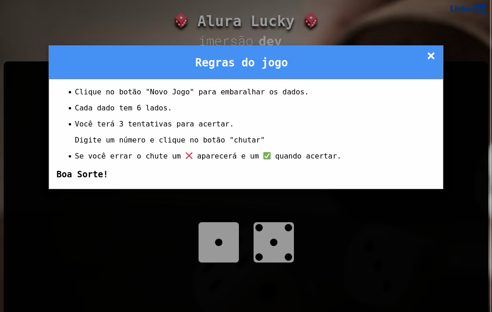
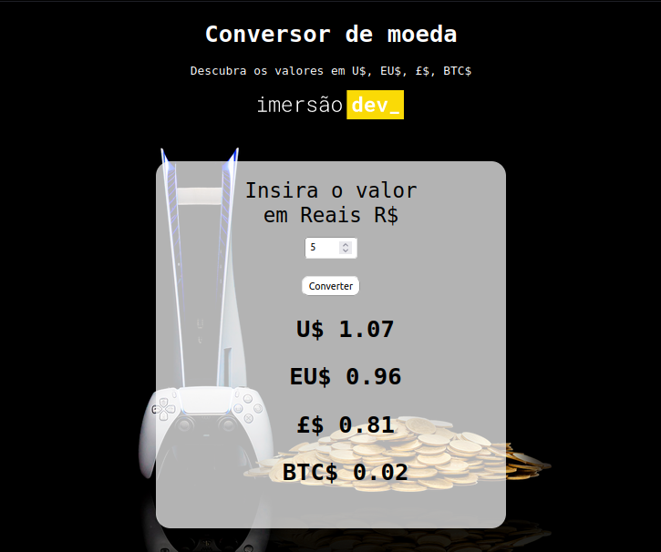
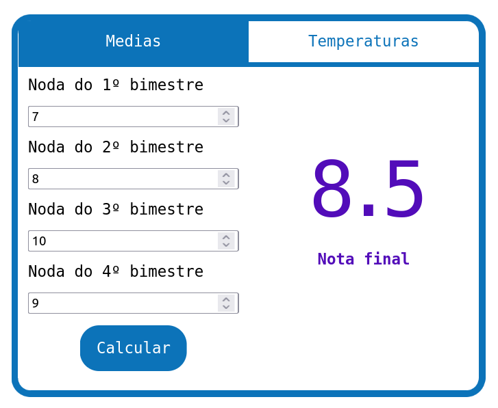
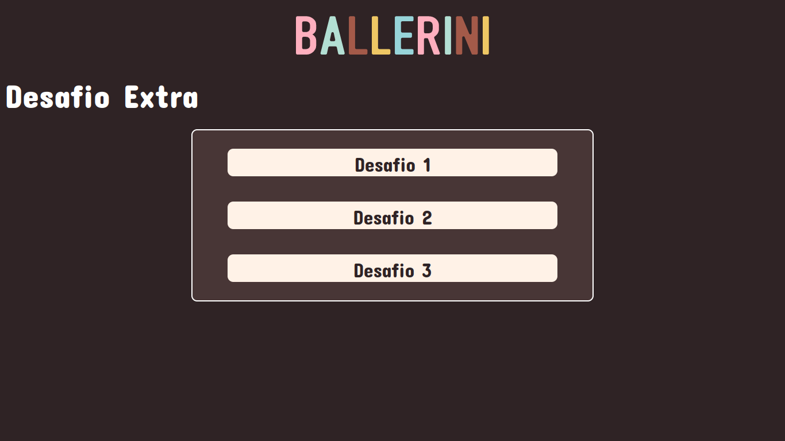
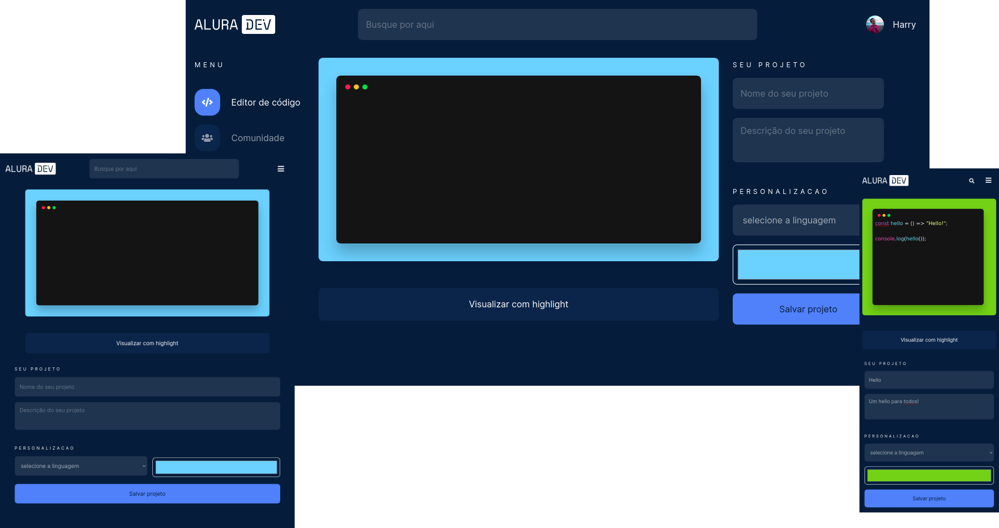
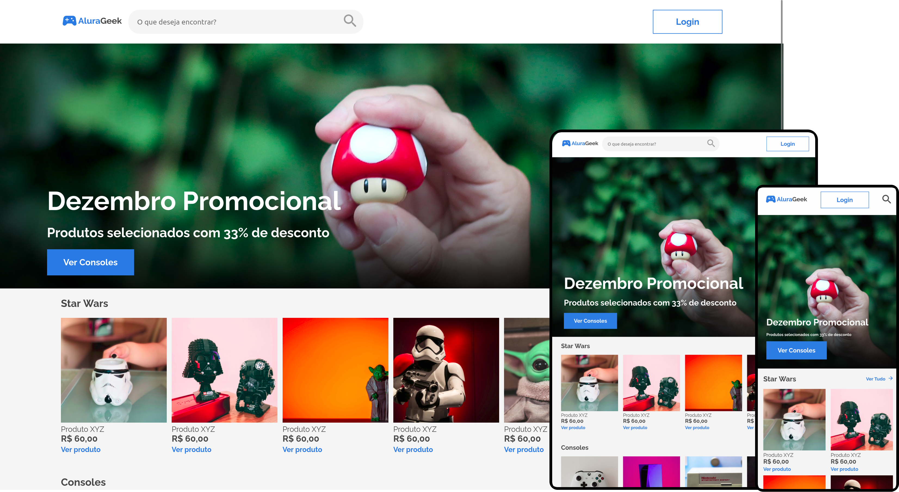

Walter Alípio
Sobre mim
Olá, meu nome é Walter Alípio, prazer.
Apaixonado pela área de desenvolvimento, com foco em Front-End. Estudante de Análise e desenvolvimento
de sistemas e
aluno da Alura cursos de tecnologia.
Por 10 anos fui sócio e instrutor na TSKF Academia de Kung Fu, onde atingi o grau de faixa preta 2º
tuan. Decidi mudar
de ares e voltar para a área de TI, trazendo na bagagem toda a disciplina e comprometimento de um
artista marcial.
Aqui você vai encontrar alguns dos meus projetos.
Projetos
-
Alura Lucky

Descrição
Baseado no Mentalista, projeto da aula 3 da Imersão Dev da alura, o Alura Lucky é um jogo de
adivinhação. Utilizando
apenas recursos nativos de HTML, CSS e JS sem nenhuma biblioteca ou dependência. No seu
desenvolvimento, foi possível
trabalhar com alguns efeitos do CSS como transition, webkit-box-reflect e animation.
-
Conversor de moeda

Descrição
Converte o valor em digitado de reais R$ para dólar, euro, libra e bitcoin, apresentando os
resultados em coluna.
Para esse projeto foi feito o consumo de uma API externa que traz o valor de cotação das
moedas
selecionadas. Trabalha com
promise, fetch, async e await.
-
Calculadora e conversor

Descrição
Baseado na proposta da primeira aula da imersão dev Alura.
Calcula a média entre 4 notas,
converte temperatura de graus
celsius para fahrenheit e de fahrenheit para celsius.
O layout possui um template único que
é alterado ao clicar nas
abas da parte superior, funcionando semelhante a uma single page application.
-
TOP 2 no Desafio Tech

Descrição
Foram 3 desafios e um extra, propostos na comunidade do discord da Ballerini.
O primeiro era entrar com dados do usuário e devolvê-los em uma única frase, ou lista. O
segundo era
entrar com um valor de troco e devolver quantas moedas seriam usadas. O terceiro era entrar
com um parágrafo e devolver
quantas letras, palavras e frases existem no texto. Por último, desafio extra, desenvolver
uma interface em html e css.
Foi possível praticar um varios conceitos de html e css, e principalmente, consegui usar
conceitos que
aprendi sobre o paradigma de
orientação a objetos e MVC do curso do professor Flávio Henrique na Alura. O projeto ficou
em 2º lugar na lista entre os
10 melhores projetos.
-
Alura Dev

Descrição
Na página home você pode escrever um código que seja html, css, ou js e visualizá-lo em
highlight. Para isso foi usada
uma biblioteca externa, highlight.js. A borda da área de código pode ser estilizada com a
cor que você quiser. Nome do
projeto e linguagem são campos obrigatórios para poder salvar.
As informações são salvas em um arquivo JSON no localStorage, que serve de banco de dados, e
importadas na página da
comunidade.
O like também foi implementado e salva o contador no localStorage.
Na página da comunidade é possível procurar por um projeto específico digitando o nome do
projeto ou alguma letra ou
palavra na barra de busca, implementado usando expressão regular no js.
O projeto mais desafiador até agora, meu primeiro challenge e o segundo challenge front-end
da Alura. Feito com base em
layout disponibilizado no figma, seguindo cartões de tarefas pelo trello e com a ajuda da
comunidade do discord.
-
AluraGeek

Descrição
AluraGeek simula a página de administrador de um e-commerce. Projeto do terceiro challenge
front-end da Alura, ainda em
construção, já conta com layout responsivo de todas as páginas e validação dos inputs do
formulário no rodapé. Será
implementado conexão a API para editar os produtos das páginas.